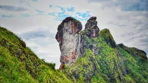
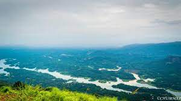
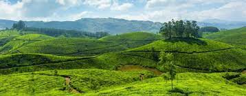

Kottayam district is famous for its rich heritage and literary tradition. It is renowned for its spice and rubber trade. Cradled by the backwaters and the Western Ghats, it is epitomised by its stretches of vast greenery, paddy fields and huge rubber plantations. Over five of the State’s leading newspaper publications originate from Kottayam. About four-fifth of books published in the State come from here as well. From trekking hotbeds like Nadukani and Kottathavalam to the rare avian life on display at the Kumarakom Bird Sanctuary, this district encompasses everything that God’s Own Country is famous for. Well connected to the entire State, it is full of interesting historical and cultural locations that tell the tale of how the district was forged into its current form.
Illikkal Kallu is a monolith located on top of the Illickal Malaa in the Kottayam district of Kerala, India.The distance from kottayam railway station to illikal kallu is 57km. Situated at around 3400 feet above sea level, Illickal Kallu is a major tourist attraction in Moonnilavu and Thalanadu village of Meenachil taluk. Only one half of the original rock remains, as the other half of the rock has fallen off. The nearest town is Teekoy. Numerous mountain streams originate from this peak and flow down to form the Meenachil River. Tourists must trek 1 km to reach the summit of the peak.
Ilaveezhapoonchira is a tourist destination located in Melukavu village in Kottayam district near Kanjar. Ilaveezha Poonchira is surrounded by three enchanting hillocks - Mankunnu, Kodayathoormala and Thonippara. This makes the place ideal for trekking.
The Vaikom Mahadeva Temple is a temple for the Hindu god Shiva in Vaikom, Kerala. The temple, along with Ettumanoor Siva Temple, Kaduthuruthy Thaliyil Mahadeva Temple is considered a powerful trisome. The belief is that if a devotee worships at these three temples before 'Ucha pooja', all the wishes are fulfilled. The Vaikom Mahadeva temple is one of the few temples which is held in reverence by both Shaivaites and the Vaishnavaites. Vaikom's Shiva is fondly called Vaikkathappan. The Shiva Linga here is believed to be from the ‘Treta yuga’ and considered as one of the oldest temples in Kerala where pooja has not been broken since inception.